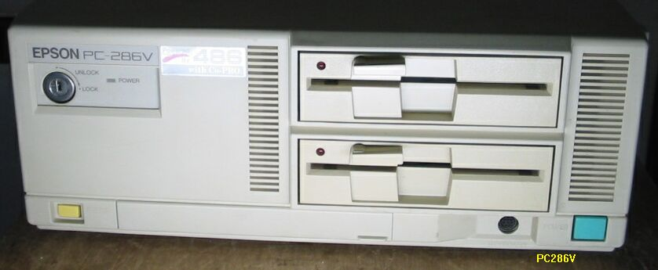
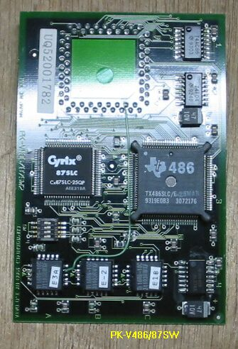
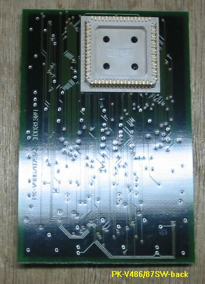

PC286V-STD/486

PC286V-STDの主な仕様
・CPU;386SX16MHz 10/6MHz切り替え可能
・RAM;1.6MB max14.6MB
・FDD;1M/640Kバイト両用タイプの3.5インチFDD２基内蔵
・HDD;3.5インチSCSIタイプHDD１基内蔵可能
・外部拡張スロット;4 PC98用互換ボード装着可能


上の２枚の写真は、このマシンに入っていたCPUアクセラレータPK-V486/87SWです。
下側の裏面では、286のソケットに差し込む構造がよくわかります。
(2003/05/05 修正）
EPSON-PC98互換機のページに戻る